Yvette's ~*
| Once her rudimentary training in elementary Theoplossey was at a satisfactory stage of completion, in order for Antressa to graduate to the next level of Magic, she had to decipher a riddle of Terra Lattine structure.......it was set in the form of a Lanzikk Code and ran directly as follows ~*~ ~~~~~~~~~~ The Three Principal Mindsets of Knollys, free from any determined resolution, in Youth, as Spirits shall be treated among the advocates of Knowledge attainment, are issued by the Cosmic Triad........ If the Mindsets will presently enter into public maintenance of this Theophlosser's authority and send money to entertain 1000 soldiers of their own for three months and command the forces here to aid them for that time, they will bring all Chaos in effect to obey that authority.......and cause all Chaotics to yield justice to Cosmic Order without the Mindsets charge............furthermore, ye who are without should send an Ambassador to the Frontal Line for congression with remedies at hand for two more factions than were last seen at Court, persona non grata............and if she be of good stock, and can hand theirs over at best claim, then resources shall be provided for punitive action against the Chaotics, except in such case as they join Cosmic in Harmonious Enterprise..........this allowance is made only once, as the cost and labor of LightBeaming are increased due to dwindling population in the Esterbeian Core ~* ~~~~~~~~~ If Antressa would repeat the incantation " peerwing glander fander, optezzooky baptumbeen ", upon each waning gibbous, then her chances of solving the Riddle and deciphering the Code would be exponentially enhanced......... let us all join hands and sing for Antressa that she may indeed pass to the next level of Theophlossey...........her sister grows stronger in Zorph's Dominion............. |
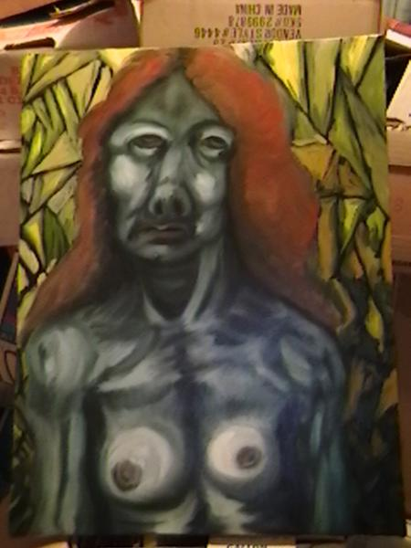
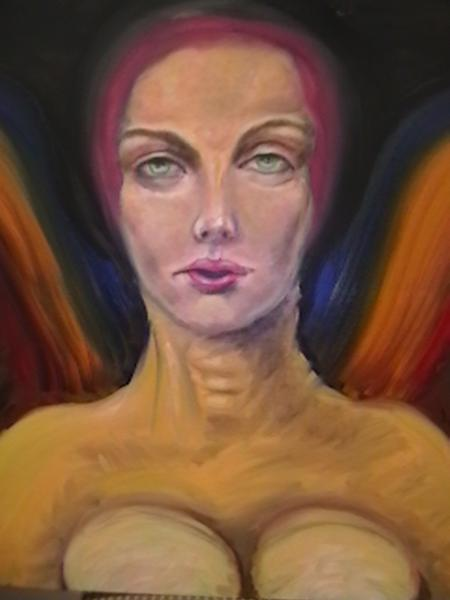
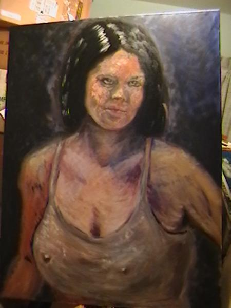
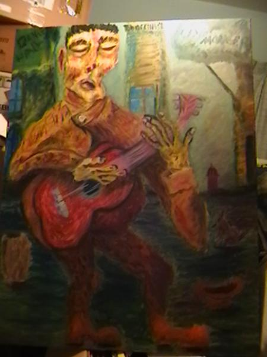
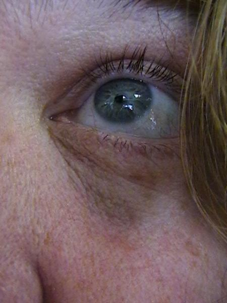
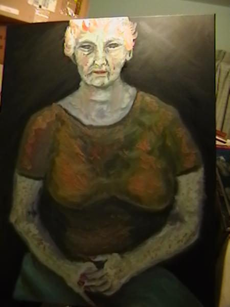
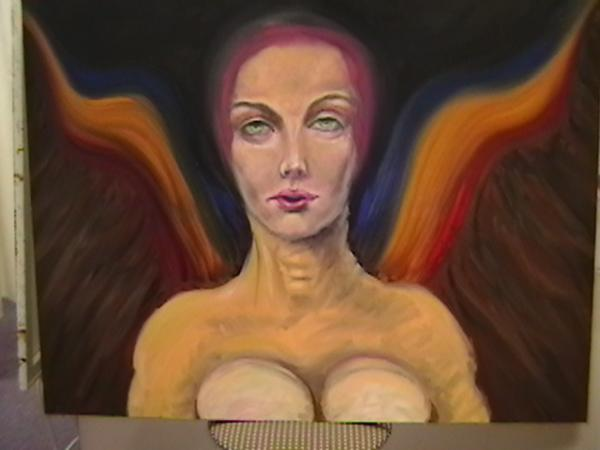
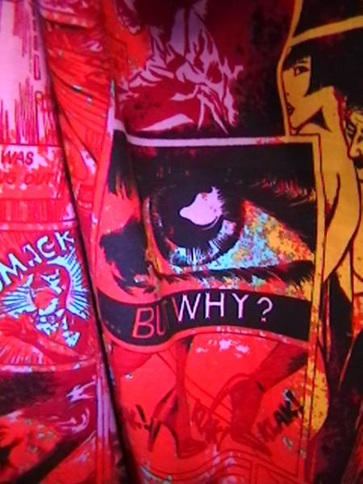
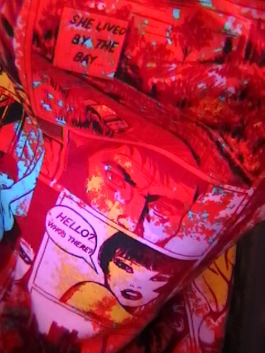
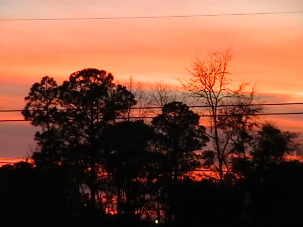
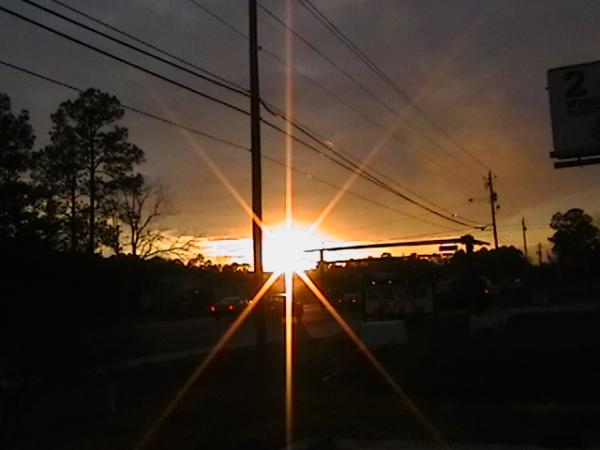
Yvette's ~*
Thank you all for Traveling with Yvette's ~*
| the Ancients teach that We can live virtuous and upright lives, ever walking in the paths of Truth and Justice, even though our lives be endangered thereby ~* |